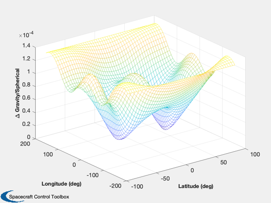

Demonstrate a high order gravity model.
Displays the LP150Q lunar model, which is a 150x150 order model.
See also LoadLP150Q, GravityMap
Contents
%-------------------------------------------------------------------------- % Copyright (c) 2016 Princeton Satellite Systems, Inc. % All rights reserved. %-------------------------------------------------------------------------- % Since 2016.1 %-------------------------------------------------------------------------- n = 150; lat = linspace(-pi/2,pi/2,50); lon = linspace(-pi,pi,50); alt = 2000; m = min([n 72]); disp('Loading LP150Q'); g = LoadLP150Q( 'LP150Q.sh' );
Loading LP150Q
Normalized gravity model
disp('Calculating gravity data...');
GravityMap( lat, lon, alt, n, n, g, 0 );
Calculating gravity data...
Unnormalized gravity model
g2 = UnnormalizeGravity( g ) disp('Calculating gravity data...'); GravityMap( lat, lon, alt, n, n, g2, 0 ); %-------------------------------------- % PSS internal file version information %-------------------------------------- % $Date$ % $Id: 2ccde1350ae4201d5a18cdf5d9caaa05ae1bb273 $
g2 =
struct with fields:
name: 'LP150Q'
string: ''
mu: 4902.8
a: 1738
c: [150×150 double]
s: [150×150 double]
j: [0 -0.00020326 -8.4745e-06 9.6423e-06 … ] (1×150 double)
isNormalized: 0
Calculating gravity data...